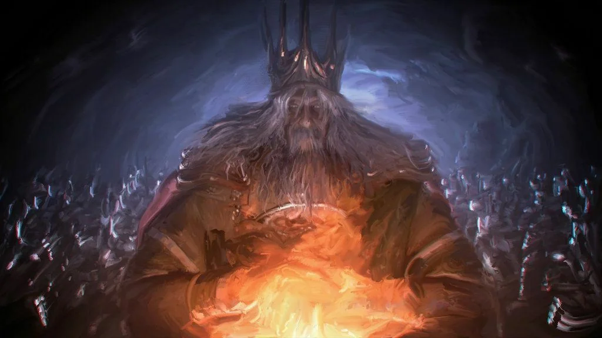
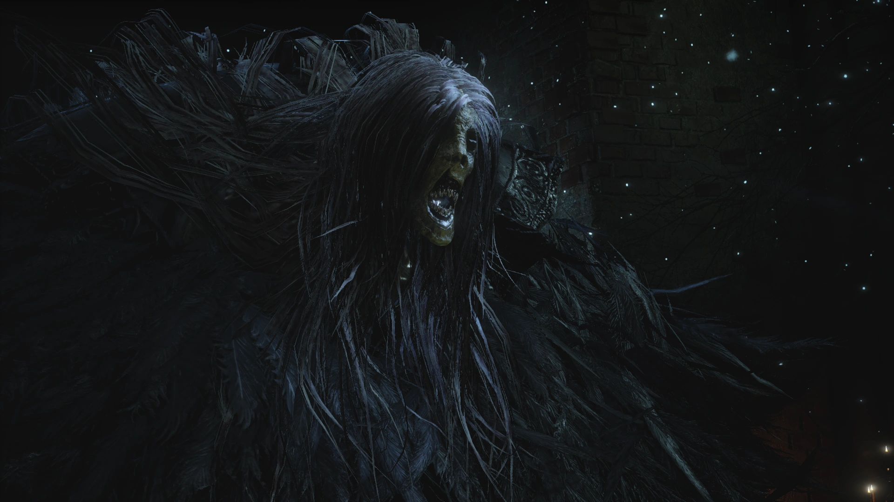
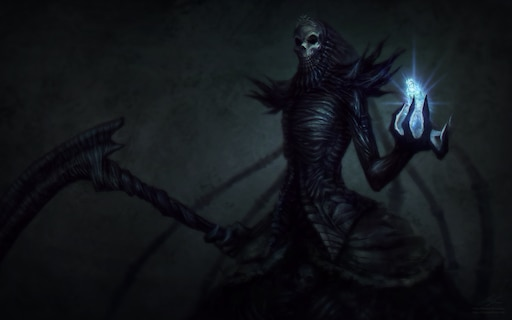
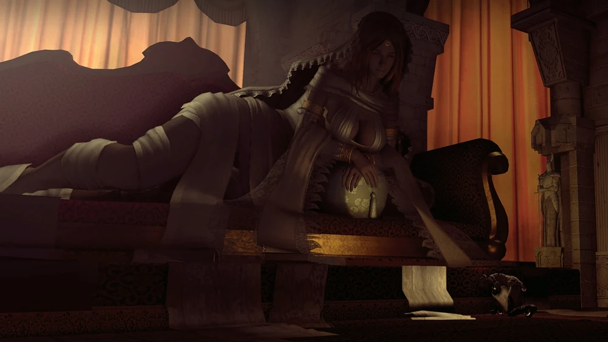

Soberano de la luz que sacrificó su propia alma a la Primera Llama para aplazar la Era de la Oscuridad. Hoy, solo resta el cascarón consumido de un rey legendario, obligado a custodiar un fuego que agoniza con su devastador espadón imbuido en llamas.
Wiki
Venerable e imponente gigante ciego que derrama implacablemente su propia sangre sobre el Caldero para aplacar la Llama del Mundo Pintado. Consumido por el fervor y el dolor, se aferra desesperadamente a la pudrición de su hogar para evitar que el fuego devore todo lo que ama.
Wiki
Reina de Drangleic y fragmento corpóreo del alma de Manus, la Oscuridad primigenia. Bajo su engañosa apariencia de belleza frágil, oculta una ambición implacable por devorar el trono del gigante y sumir el reino en una interminable Era de la Oscuridad.
Wiki
Hija predilecta de Gwyn y personificación de la gracia y la fertilidad en Lordran. Aunque venerada como una majestuosa diosa que baña Anor Londo en una cálida luz divina, su presencia real no es más que una deslumbrante ilusión creada para ocultar un reino abandonado por los dioses.
Wiki